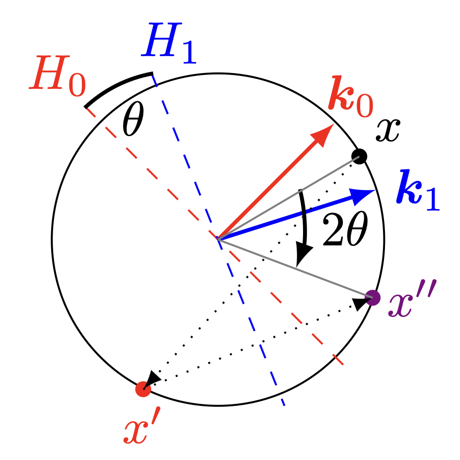
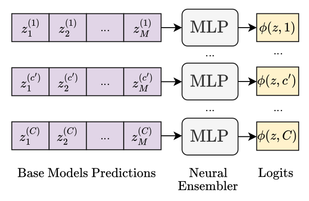
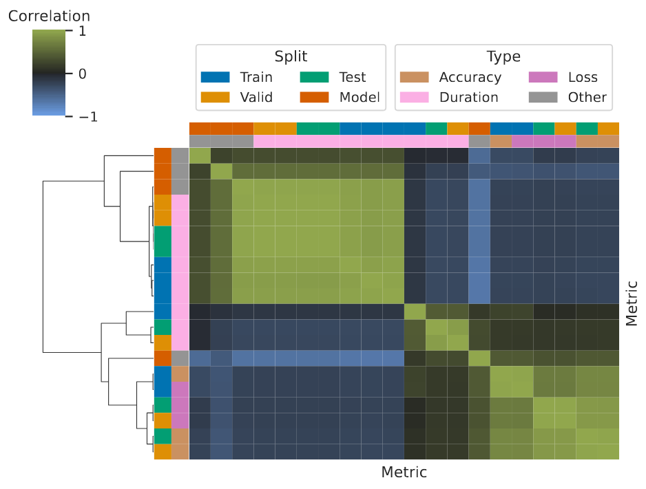
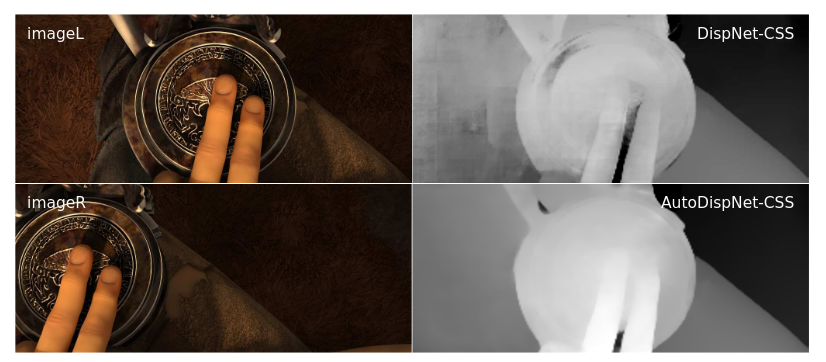

Arber Zela
About Me
I am a Postdoctoral Researcher at the ELLIS Insitute Tübingen, Germany. Before I was an ELLIS Ph.D. student at the University of Freiburg advised by Frank Hutter and co-advised by Yee Whye Teh at the University of Oxford. Since 2025 I am also an ELLIS member.
Research Interests
- AutoML: Neural Architecture Search, Structural Pruning, Benchmarking
- In-Context Learning: Linear RNNs, Reasoning, Tabular and Time-Series Foundation Models
- Global Optimization: Bayesian Optimization, Multi-objective Optimization, Bandits
News
- [Jan. 2026] "Improving LLM-based Global Optimization with Search Space Partitioning" is accepted at ICLR 2026.
- [Nov. 2025] "TempoPFN: Towards Synthetic Pre-training of Linear RNNs for Zero-shot Time Series Forecasting" is accepted at AITD@EurIPS 2025.
- [Oct. 2025] I successfully defended my PhD Thesis with summa cum laude.
- [Sep. 2025] "DeltaProduct: Improving State-Tracking in Linear RNNs via Householder Products" is accepted at NeurIPS 2025.
- [May 2025] "Regularized Neural Ensemblers" is accepted at AutoML Conference 2025.
- [Mar. 2025] "DeltaProduct: Increasing the Expressivity of DeltaNet Through Products of Householders" is accepted at FM-WILD Workshop at ICLR 2025 as an Oral.
- [Feb. 2025] 2 papers accepted at ICLR 2025. "Multi-objective Differentiable Neural Architecture Search" as a Poster and "Unlocking State-Tracking in Linear RNNs Through Negative Eigenvalues" as an Oral.
- [Oct. 2024] 3 papers accepted at NeurIPS 2024 workshops: "Unlocking State-Tracking in Linear RNNs Through Negative Eigenvalues" (Oral), "GAMformer" (Poster), and "Ensembling Finetuned Language Models for Text Classification" (Poster).
- [Sep. 2024] "HW-GPT-Bench: Hardware-Aware Architecture Benchmark for Language Models" was accepted to NeurIPS 2024 Datasets and Benchmarks Track.
- [Jun. 2024] "Multi-objective Differentiable Neural Architecture Search" was accepted to the WANT workshop at ICML 2024.
Recent Talks / Seminars
- [Nov. 2024] "Searching for Calibrated, Efficient, and Expressive Neural Networks" at University of Basel (Slides)
- [Mar. 2024] "Multi-objective Differentiable Neural Architecture Search" at the AutoML Seminars (Youtube) (Slides)
Publications
-
 ICLR International Conference on Learning Representation 2026
ICLR International Conference on Learning Representation 2026
-  NeurIPSAdvances in Neural Information Processing Systems 2025
-
 AITD@EurIPS EurIPS 2025 Workshop on AI for Tabular Data
AITD@EurIPS EurIPS 2025 Workshop on AI for Tabular Data
-  AutoML-Conf
-
 ICLR (Oral) International Conference on Learning Representation 2025 (Oral)
ICLR (Oral) International Conference on Learning Representation 2025 (Oral)
-
 ICLR International Conference on Learning Representation 2025 (Poster)
ICLR International Conference on Learning Representation 2025 (Poster)
- Journal of Clinical Medicine 14(21), 2025
-
 TLR@NeurIPS NeurIPS 2024 Workshop on Table Representation Learning
TLR@NeurIPS NeurIPS 2024 Workshop on Table Representation Learning
-
 FITML@NeurIPS NeurIPS 2024 Workshop on Fine-Tuning in Machine Learning
FITML@NeurIPS NeurIPS 2024 Workshop on Fine-Tuning in Machine Learning
-
 NeurIPS DBT Advances in Neural Information Processing Systems 2024, Datasets and Benchmarks Track
NeurIPS DBT Advances in Neural Information Processing Systems 2024, Datasets and Benchmarks Track
-
 IJCV International Journal of Computer Vision 2023
IJCV International Journal of Computer Vision 2023
-
 ICLR International Conference on Learning Representation 2022
ICLR International Conference on Learning Representation 2022
-
 NeurIPS DBT Advances in Neural Information Processing Systems 2022, Datasets and Benchmarks Track
NeurIPS DBT Advances in Neural Information Processing Systems 2022, Datasets and Benchmarks Track
-  NeurIPS DBTAdvances in Neural Information Processing Systems 2022, Datasets and Benchmarks Track
-
 ICLR International Conference on Learning Representation 2022
ICLR International Conference on Learning Representation 2022
-
 NeurIPS Advances in Neural Information Processing Systems 2021
NeurIPS Advances in Neural Information Processing Systems 2021
-
 NeurIPS Advances in Neural Information Processing Systems 2021
NeurIPS Advances in Neural Information Processing Systems 2021
-
 UDL@ICML 2021 ICML 2021 Workshop on Uncertainty and Robustness in Deep Learning
UDL@ICML 2021 ICML 2021 Workshop on Uncertainty and Robustness in Deep Learning
-
 IJCNN International Joint Conference on Neural Networks 2021
IJCNN International Joint Conference on Neural Networks 2021
-
 ICLR International Conference on Learning Representation 2020
ICLR International Conference on Learning Representation 2020
-
 ICLR (Oral) International Conference on Learning Representation 2020 (Oral)
ICLR (Oral) International Conference on Learning Representation 2020 (Oral)
-  ICCVInternational Conference on Computer Vision 2019
Powered by Astro and Minimal Light theme.